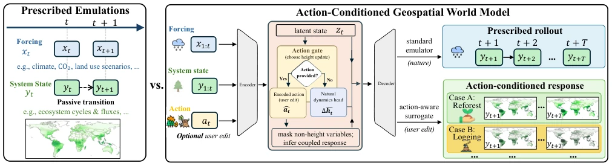

This paper performs an 'action modification' on Earth System Models, attempting to transform simulators that only passively predict into interactive agents capable of listening to 'deforestation' or 'afforestation' commands. The authors did not pursue robotics, but instead rigidly defined canopy height change as 'action', employing a world model approach for What-If simulations. Although it sounds like adding a controller to an Earth digital twin, it is essentially a variant of time series prediction, merely augmented with a gating mechanism. The advantage lies in its ability to indeed respond to interventions; the disadvantage is that only forests were tested, excluding atmosphere or hydrology, suggesting coupling may not be fully resolved. Although treating natural change as implicit action is clever, it introduces assumption risks, questioning whether natural growth is truly equivalent to 'action'. Additionally, the model's weaker response in mature forests suggests its generalization capability may be constrained by forest age structure. Overall, this is an interesting interdisciplinary attempt that demonstrates the potential of world models in Earth sciences, yet remains distant from true interactive scientific agents.
Existing Earth system simulators are predominantly passive predictors, capable only of reproducing trajectories under given forcing, lacking user intervention mechanisms [6, 13]. This limits their application in interactive scientific workflows, where users frequently need to explore system responses following state changes [9]. While world models have provided controllability in the robotics domain [1, 2], Earth systems lack explicit action labels and feature physically coupled variables. This paper aims to reconstruct passive simulation into an action-conditioned state transition model, enabling rapid What-If exploration through unlabeled action supervision to address the deficiency in intervention awareness among existing agents. Traditional simulators fail to support dynamic modification of system components, rendering them unable to answer critical questions such as 'what if a specific state component is altered'. This limitation hinders the integration of machine learning agents into interactive scientific analysis, constraining their utility in policy formulation and hypothesis generation. Consequently, introducing an action-conditioned mechanism is vital for constructing Earth system digital twins, necessitating a paradigm shift from passive prediction to active intervention.
The core of the framework is Transition-Action Pretraining and Masked Response Learning. First, unlabeled actions are derived from natural state changes, such as canopy height change $h_{t+1} - h_t$ serving as action supervision, requiring no manual intervention annotation. Second, a Gated Dynamics architecture is adopted: predicting natural growth when no action is present, and when an action is present, forcibly updating controlled variables via an Action Gate, followed by decoding remaining variables to balance controllability and natural evolution. Specifically, the model generates latent representations through an Encoder, the Natural-dynamics head predicts natural increments, and the Action Gate decides whether to superimpose natural increments or apply encoded actions. Finally, during training, non-controlled variables are masked, forcing the model to learn cross-variable coupling dependencies to ensure inference of unobserved variable responses under partial state editing. This allows the model to simultaneously support standard deduction and interactive editing, resolving the contradiction between missing actions and state coupling. In loss calculation, the ground truth for controlled variables is provided by action derivation, while non-controlled variables are masked, thereby reinforcing the learning of internal system dependencies and ensuring the ability to infer unobserved variable responses under partial state editing.

Figure 1: Overview of the proposed action-conditioned world-modeling framework for extending passive Earth-system emula- tors with controllable state edits, transition-action pretraining, and masked response inference.
Based on the CarbonGlobe dataset [12], covering 6 continents and 21315 samples, evaluating 3 forest ages. Baselines include Persistence and a dedicated no-action simulator. The metric is long-term rRMSE. Results indicate that the world model's performance is comparable to the dedicated baseline, without sacrificing natural prediction capability. Under height action perturbation, the model responds in an orderly manner and can infer coupled changes in non-height variables (such as aboveground biomass). Masked inference experiments demonstrate that even with partial variable missing, the model maintains response consistency, validating the learning of cross-variable dependencies. The response is weaker in mature forests, consistent with growth dynamics. The experiments also compared performance across different forest ages, finding that young forests are more sensitive to actions, while mature forests change more slowly, which aligns with ecological laws. Although ablation experiments are not listed in detail, the results imply the contribution of masked learning to stability. Overall, the framework achieves controllability while maintaining accuracy, providing a new pathway for Earth system simulation.